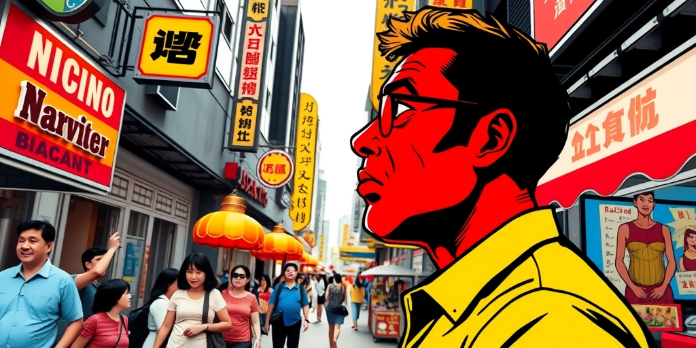
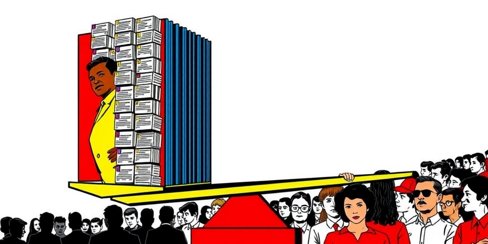
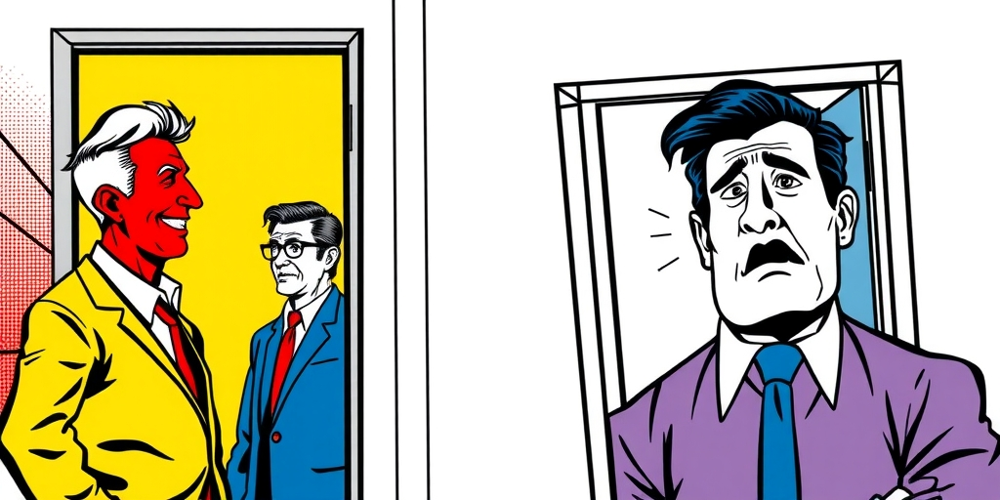

小汪老师的成长洞察 · 属于你的成长专栏
澳门人对游客笑脸相迎，香港人却常常冷脸相对。不是因为谁天生更好客，而是因为澳门的制度替你挡掉了所有竞争者，香港的制度留了一道门缝。一个反直觉的规律：制度上的排外程度和人际上的排外程度成反比。

去澳门，你几乎感受不到排外。餐馆老板会耐心推荐菜，路人会停下指路，赌场大巴免费接送，管你是哪里人。不是因为澳门人天生热情，而是制度替你完成了筛选。除了结婚，你没有其他路径移居澳门。你来了只能消费，抢不了饭碗。你给他收入，又不构成威胁，他为什么要跟你急？
香港就不一样。专才计划、优才计划、投资移民，外地人有机会留下来竞争。于是街头冷眼、餐厅不耐烦、服务态度差，部分人把不满直接挂在脸上。同样的游客，在两个制度不同的城市，遭遇的人际温度截然相反。
这个温差指向一个深层规律：制度排斥和人际排斥，是同一类防御机制的两种表达形式。它们之间存在替代关系。当法律、签证、户籍等正式制度把外部竞争过滤掉百分之九十九，个体就不再需要启动人际防御。你已经够安全了，不需要再用冷脸加一道锁。

可以把一个群体的排斥总量看作一个常数。这个常数不是耗在制度上，就是耗在人脸上。制度壁垒越高，人际敌意越低。制度壁垒越低，人际敌意越高。就像一个家庭，如果防盗门够厚，你在屋里就放松。如果门锁坏了，你连睡觉都会竖着耳朵。
这个公式可以平移到内地城市。一个户籍壁垒极高的城市，外来人口不管待多少年都拿不到本地身份，本地人反而不太会对游客露出敌意。制度已经替你完成了筛选。一个户籍宽松、就业市场开放的城市，本地人的排外情绪反而更容易浮出水面。制度不替你守门，你就自己上哨。
这不是某个城市的人更狭隘。是焦虑从制度层转移到了人际层。当正式制度的过滤力度很弱，外人可以轻易进入你的就业市场和公共服务体系，你的大脑就会下意识地把每一个陌生人评估为潜在威胁。
这也能解释另一个现象：为什么游客到处受欢迎，移民处处被提防。游客和移民对本地人来说，是完全不同的经济信号。前者等于收入加离开，后者等于竞争加留下。同样的面孔、同样的口音，行为标签一变，本地人的威胁感就从零跳到满格。
更深层看，这是一个关于边界感的心理问题。人类天然需要感知到自己所在群体的边界是安全的。这个安全感可以由制度提供，也可以由人际行为提供。当制度提供了足够的安全感，签证够难拿、绿卡够稀少、户口够紧，边界感被满足，个人层面放松。当制度不能满足边界安全感，移民太多、工作被抢、学区被挤，边界焦虑就会下沉到个人层面，以冷漠、排斥甚至攻击的形式浮出来。
这揭示了一个残酷的政策困境：让一个社会在制度上更开放，短期内在人际层面会变得更不友善。你拆掉了法律的围墙，人们就会在餐桌上、面试里、租房电话中自己搭墙。这不是人变坏了，是焦虑从制度层转移到了人际层。

制度开放的收益需要一代人的时间去消化。等到本地人发现开放并没有真的抢走他们的饭碗，新的人际常态才会建立。但政策制定者很少考虑到这个过渡期成本。制度开放导致人际敌意上升，社会摩擦加剧，这个阶段往往被归咎于人的素质，而不是制度切换的阵痛。
这个逻辑可以推广到公司场景。一家公司如果招聘门槛极高，几乎只从内部提拔，老员工对新加入者自然和善。你已经过了窄门，不是威胁。一家公司如果招聘门槛低，频繁从外部引入中高层，老员工对新人自然排斥。你的上升通道随时可能被空降兵堵住。制度壁垒的高度，直接决定了人际温度。
回到城市，如果制度不替你挡人，你就会用冷脸挡人。这不是道德问题，是安全感的分配问题。排斥总量不会消失，只会在制度和人际之间流动。
写给你的话
你是真心喜欢开放，还是只喜欢别人替你承受开放的代价？如果一个社会要走向更开放的制度，它有没有准备好承受制度撤闸之后的人际反弹？当法律不再替你守门，你愿意接受自己上哨的疲惫吗？这些问题没有标准答案，但每一个支持开放的人都应该先问自己一遍。
小汪老师的成长洞察 · 属于你的成长专栏